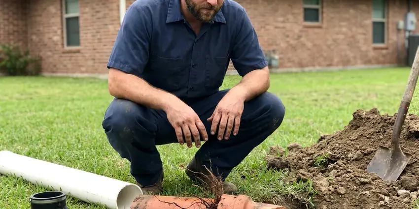

Emergency Plumbing Repair in Kettering, OH
Sewage in the tub or water on the floor? HRL Plumbing sends an emergency plumber in Kettering, OH with the auger, jetter and parts on the truck.
- Fully Stocked Service Trucks
- Licensed Ohio Plumbers
- Fast Response Day or Night
- Upfront Pricing Before Work
Water Where It Shouldn't Be in Kettering, OH?
Our plumbers carry valves, pipe and water heater parts, so most emergencies get fixed in one visit.
Prompt Emergency Plumbing Repair in Kettering, OH for Leaks, Backups and Bursts
HRL Plumbing handles the plumbing problems that cannot wait until morning. Minutes matter on these. Burst supply lines, failed water heater tanks, sewer backups and broken shutoff valves can soak drywall and flooring in under an hour, so we start by talking you through the shutoff on the phone. Then a plumber shows up with the parts to fix it.
Work we handle every week:
- Leaking water heater shutoff, drain-down and replacement
- Emergency drain and sewer clearing
- Leaking water heater drain-down and repair

Additional Plumbing Repair Services in Kettering, OH
We offer expert plumbing repair services across Kettering, OH to fix leaks, restore flow, and keep your system running smoothly.


Customers
Why Choose HRL Plumbing for Emergency Plumbing Repair in Kettering, OH?
Every emergency plumber we send is fully licensed and carries a full parts inventory. That means fewer temporary fixes and fewer return visits.
- Trained Technicians, Our plumbers repair every common emergency and work to Ohio plumbing code.
- Holidays Included, Our emergency crew works weekends and holidays, so you are not waiting until Monday.
- Quick Dispatch, We send the nearest plumber, because a split line puts out water fast.
Citywide Coverage
Single-family homes, apartments, condos and businesses in Kettering all get the same emergency response. Holidays are covered. A burst pipe on a holiday weekend does the same damage as one on a Tuesday, so the on-call crew works straight through weekends and holidays.
Experienced Team
Every plumber at HRL Plumbing who takes emergency calls completes regular training on emergency repairs. Cold snaps are busy. In a freeze, they check every outside wall and crawl space run, since one split line often means another is close behind.
Safety-First Approach
For every emergency repair, HRL Plumbing follows standard safety practices and keeps the work area secure. Tools stay put away. Even a corroded pipe or failed valve replacement gets done to code with tested fittings, so nothing was rushed in the dark.
Trusted Certified Kettering Plumbing Services Professionals
At HRL Plumbing, we take pride in licensed, certified plumbing services throughout Kettering, OH. Credentials matter in this trade. Every repair, install and maintenance visit follows strict safety and quality rules, and the plumbers doing the work carry recognized industry credentials.
Call Us Now PHCC Plumbing Contractor Recognition
PHCC Plumbing Contractor Recognition Better Business Bureau (BBB) Accreditation
Better Business Bureau (BBB) Accreditation Angi Certified Pro
Angi Certified Pro ISO 9001 Quality Management Certification
ISO 9001 Quality Management CertificationAround-the-Clock Emergency Plumbing Repair in Kettering, OH
Slab Leak Emergency Repair in Kettering
Slab leaks often stay hidden until a floor turns warm or water comes up through grout. By then, it's urgent. We isolate the leaking line so the rest of the house has water, locate the break with acoustic gear and then lay out a spot repair, a reroute or a trenchless option with a price on each. Your Kettering property is stabilized in the meantime.

Main Water Line Break in Kettering, OH
A broken main can flood the yard or leave you with no water. Close the meter valve. We help you turn the water off at the meter box, then a crew locates the break with leak detection gear so we dig one hole in the right place instead of trenching the yard. Service is restored as soon as possible.
Burst Pipe Repair in Kettering
During deep cold snaps, homeowners around Kettering can let faucets drip and open sink cabinets to keep heated air on the pipes. We close the main, find the split and cut it out. The repair uses PEX, copper or PVC to match what is in the wall, and we check the pipe on each side of the break for more damage before closing it up. Wet drywall in your Kettering home gets opened to dry.
Gas Leak Emergency Service in Kettering
Smell gas? Get everyone outside. After you're out and the utility has been called, our licensed plumbers locate the leak, replace the bad fitting or pipe and test everything before turning the gas back on. Kettering gas work is always pressure tested.
Sewer Line Backup Emergency in Kettering
Raw sewage in the house is a health hazard. Don't run any fixtures. We open the cleanout, clear the main and run a camera to see if roots, a sag or a broken pipe caused it, so you know whether you need a repair or a cleaning. Kettering backups include cleanup.
Water Heater Failure in Kettering, OH
No hot water on a weeknight is a problem, and a leaking tank is an emergency. Both get a call back fast. Our technicians test the elements, thermostat, gas valve and relief valve on tank units and run the error codes on tankless systems, then repair it that night or set up a replacement. Service is available across Kettering, OH.
Pipe Bursts in Older Kettering Homes
Older houses still have galvanized steel in the walls, and it rusts from the inside out. It fails without warning. We stop the water, remove the bad section and join in PEX or copper with transition fittings, then look at how much galvanized is left. We'll also help you dry the area to head off mold.

Overflowing Toilet Emergency Repair in Kettering, OH
Water from an overflow soaks flooring and the ceiling below fast. Turn the stop valve. We clear the clog, replace the fill valve and flapper if they are worn and check the drain line past the toilet for a deeper blockage, and if the wax ring has failed or the bowl is cracked, we replace it. We disinfect the area afterward.
Emergency Plumber Near You in Kettering, OH
Someone searching emergency plumbing repair near me needs a plumber who answers and shows up fast. We do both. Ready day and night, our plumbers bring the tools and parts for most problems, from a split supply line to a backed-up main.
Our plumbers work in this area every day. Being close saves time. An emergency call gets put at the front of the line, and the plumber who arrives can usually diagnose and fix the problem on that visit with parts already on the truck.
HRL Plumbing at a Glance
- Fully licensed plumbing team covering Kettering, OH
- 24/7 emergency service with same-day scheduling
- Clear written estimates, no hidden fees
- 4.9-star rated by 673+ Ohio customers
Kettering Map
Kettering Information
- Population
- 56,876
- Area codes
- 937/513/419
- Service area
- Kettering and towns within a 40 mile drive
- Nearby
- Dayton, Middletown, Springfield, Hamilton
Temperature swings stress tanks and supply lines in Kettering, OH, and a hard freeze or heavy rain can split a pipe or back up a sewer overnight. Heavy spring rain is a major plumbing stress in Ohio, raising water tables and pushing water into basements.
Expert Services
Reach out to HRL Plumbing for reliable plumbing work done by licensed pros in Kettering, OH.
Our Specialized Plumbing Services in Kettering, OH
At HRL Plumbing, we handle the full list of plumbing services across Kettering, OH. We go from leak detection all the way to full system installations, for homes and commercial buildings, and we do it quickly at a fair price. Explore our core services below:


Our Emergency Plumbing Steps in Kettering, OH
Our emergency process is built to contain damage quickly and restore your plumbing.
Request a Quote
Call (740) 449-7505 and tell us what is happening, and we will help you shut off water or gas right away. We dispatch a plumber without delay.
Stabilize the Situation
On arrival, we stop the leak or backup and look at what got wet. We give you a written price for the repair before starting.
Repair and Restore
We make the repair, test the system and restore service. We clean up and explain how to prevent a repeat emergency.
Frequently Asked Questions About Emergency Plumbing Repair in Kettering
After-hours dispatch typically runs $150 to $350, plus the repair. Repairs are priced separately. Common emergency repairs such as a burst pipe or clearing a main line usually run $250 to $1,200, and we tell you the number before any work begins so there are no surprises on the invoice.
Yes, parts and labor on emergency repairs are both warrantied. We explain it up front. Your technician goes over the specific coverage before starting, so you know what is included for the repair at your home.
Emergency calls go to the top of the list. Timing varies a bit. Depending on call volume and distance, we usually have a plumber on the way within an hour or two of your call.
First, turn off the main water valve or the valve to the affected fixture. For a tank leak: Close the cold inlet and cut the gas or power, and if there's a gas smell, get out and call the utility from outside.
Shut off the water, then call. Never touch a gas leak. Working on pressure lines, gas or wiring yourself can make things worse fast, so close the main and call a licensed plumber.
Small emergency repairs often don't need one. Replacements usually do. A new sewer main, a repipe or a water heater replacement usually needs a permit, which we handle for you.
Yes. We often carry common tank sizes from Bradford White and Rheem for same-day replacement. If a special size is needed, we can often install it within a day.
Not all of them, but maintenance cuts the odds. Small drips become big ones. A yearly inspection, keeping grease out of drains and insulating exposed pipe before cold weather all head off the calls we see most. During deep cold snaps, homeowners around Kettering can let faucets drip and open sink cabinets to keep warm air on the pipes.
What People Are Saying About Our Plumbing Experts?

Tyler J.
We bought a taller comfort height toilet for my dad, who just had knee surgery. The plumber pulled the old one, found the flange was cracked, and replaced it before setting the new bowl. Took about two hours.
Toilet Installation · Cincinnati, OH
Rachel N.
Hard water was leaving white crust on every faucet and our dishwasher was struggling. The tech tested the water, recommended a softener sized for a family of five, and installed it with a bypass valve in one afternoon. The spots on our glasses are gone.
Water Softener · Dayton, OH
Diane F.
My kitchen faucet had dripped for months and I finally got tired of hearing it at night. HRL Plumbing came out the next morning, replaced the cartridge and the O rings, and tightened a loose base that was letting water under the sink.
Faucet Repair · Dayton, OH
Jessica T.
We were adding a gas range in a kitchen remodel and needed a new line run from the meter. The plumber pulled the permit, ran the pipe through the crawl space, and had it inspected and approved within the week.
Gas Line Repair · Springfield, OH
Brian W.
I smelled gas behind the dryer and called right away. The plumber found a corroded flex connector, replaced it, and pressure tested the whole line before turning the gas back on. He let me watch the gauge hold steady for fifteen minutes.
Gas Line Repair · Kettering, OHPaul B.
Our pit pump ran nonstop even in dry weather. The plumber found the check valve was stuck open, so the same water kept cycling back into the pit. New valve, new float switch, done in an hour. It runs quiet now.
Sump Pump · Middletown, OH